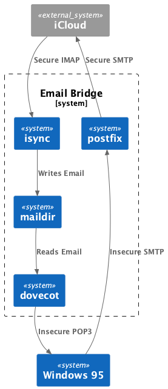
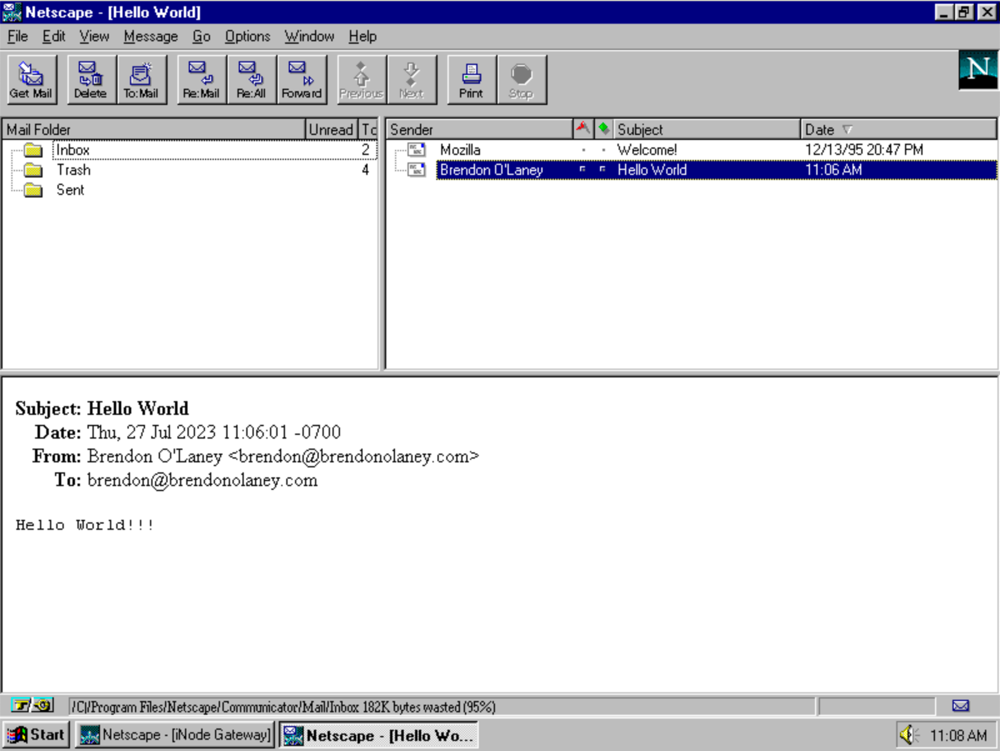

2023-07-27
I recently discovered a project called Protoweb which is an attempt to recreate the web as it existed in 1995. This was the time for me when I first got access to the internet over a blisteringly fast 33.6Kbaud modem so, of course, I needed to give it a try. However, it wasn’t enough for me to just browse on my shiny new computer with its anachronistically fast processor, no. I had to boot my favourite x86 PC emulator, install a copy of Windows 95 and experience things as they were in 1995, less the headache inducing CRT monitor.
Windows 95 is amazingly usable. I had quickly put it through its paces doing some basic tasks. I had quickly managed to listen to my copy of Big Shiny Tunes 2 in a period accurate version of Winamp, draft some prose in Word 95, generate a graph in Excel, make a basic presentation in PowerPoint, and even compile some console and GUI applications in Visual C++. Something was missing, however. Browsing the modern internet using Netscape Navigator 2 is strictly off the table since it doesn’t support modern cryptography. There are some workarounds for the browsing issue, and of course Protoweb is amazing, but I wasn’t able to find a good way to send or receive email.
Netscape Communicator only supports insecure POP3 and SMTP and, so far as I can tell, there are no current email providers that allow for this configuration (with good reason). But, certainly, I should be able to send and receive email insecurely from a computer on my local network that has all the modern cryptography necessary to forward that email securely to my normal provider right?

All that I need to do to make this system (relatively) secure is configure the bridge to only accept incoming connections from the local network; 192.168.0.0/16 in my case. Alpine Linux is my usual go to for containers/virtual machines these days. In this case I decided to use a virtual machine because I find them easier to mess around with when prototyping and idea. After installing the base system I just need to install a few packages:
apk add dovecot dovecot-pop3d isync postfix
Configure the dovecot server: /etc/dovecot/dovecot.conf
protocols = pop3
mail_location = maildir:/mail
mail_privileged_group = mail
auth_mechanisms = plain
disable_plaintext_auth = no
ssl = no
pop3_client_workarounds = oe-ns-eoh outlook-no-nuls
pop3_deleted_flag = popped
pop3_delete_type = flag
pop3_fast_size_lookups = no
pop3_uidl_format = %08Xu%08Xv
log_path = /var/log/dovecot.log
passdb {
driver = passwd-file
args = scheme=PLAIN /etc/mailpasswd
}
userdb {
driver = passwd-file
args = /etc/mailpasswd
}
namespace inbox {
inbox = yes
separator = /
}
Note here that the dovecot server will source its authentication from a
file at /etc/mailpasswd. I like to make the username and
password the same as the one I use to log in to the Alpine Linux VM
because that’s how postfix authenticates. Doing it this way makes for a
more consistent experience.
The dovecot authentication file /etc/mailpasswd:
<YOUR USERNAME>:{PLAIN}<YOUR PASSWORD>:1000:1000::/home/<YOUR USERNAME>::userdb_mail=maildir:/home/<YOUR USERNAME>/mail/ allow_nets=192.168.0.0/16,local,127.0.0.1/32
With dovecot in place and configured, now you need to get your email
into the maildir. For some reason the executable for the isync package
is called mbsync. This is a pretty simple configuration that only syncs
the last 100 messages in the inbox from your account. I created a file
at ~/.mbsyncrc:
IMAPAccount brendonolaney
Host <YOUR IMAP SERVER>
Port <YOUR IMAP PORT>
UserCmd "cat ~/.netrc | grep 'machine <YOUR IMAP SERVER>' | awk 'FNR=1 {print $4}'"
PassCmd "cat ~/.netrc | grep 'machine <YOUR IMAP SERVER' | awk 'FNR=1 {print $6}'"
SSLType IMAPS
SSLVersions TLSv1.3
IMAPStore remote
Account <YOUR ACCOUNT NAME>
MaildirStore local
Path /home/<YOUR LOCAL USER NAME>/mail
Inbox /home/<YOUR LOCAL USER NAME>/mail
Channel inbox
Far :remote:
Near :local:
MaxMessages 100
Create Near
SyncState *
Group <YOUR ACCOUNT NAME>
Channel inbox
For the UserCmd and PassCmd entries in the
above configuration I created a ~/.netrc:
machine <YOUR EMAIL IMAP ADDRESS> user <YOUR EMAIL IMAP USERNAME> pass <YOUR EMAIL PASSWORD>
machine <YOUR EMAIL SMTP ADDRESS> user <YOUR EMAIL SMTP USERNAME> pass <YOUR EMAIL PASSWORD>
It’s best practice to make this file only readable by your user account:
chmod 0600 ~/.netrc.
Next we need to configure the postfix server with
/etc/postfix/main.cf:
compatibility_level = 3.8
queue_directory = /var/spoll/postfix
command_directory = /usr/sbin
daemon_directory = /usr/libexec/postfix
data_directory = /var/lib/postfix
mail_owner = postfix
unknown_local_recipient_reject_code = 550
debug_peer_level = 2
debugger_command =
PATH=/bin:/usr/bin:/usr/local/bin:/usr/X11R6/bin
ddd $daemon_directory/$process_name $process_id & sleep 5
sendmail_path = /usr/sbin/sendmail
newaliases_path = /usr/bin/newaliases
mailq_path = /usr/bin/mailq
setgid_group = postdrop
html_directory = no
manpage_directory = /usr/share/man
sample_directory = /etc/postfix
readme_directory = /usr/share/doc/postfix/readme
inet_protocols = ipv4
meta_directory = /etc/postfix
shlib_directory = /usr/lib/postfix
smtp_sasl_auth_enable = yes
smtp_tls_security_level = encrypt
smtp_sasl_security_options = noanonymous
mynetworks = 192.168.0.0/16
smtp_password_maps = static:<YOUR EMAIL USERNAME>:<YOUR EMAIL PASSWORD>
relayhost = <YOUR SMTP SERVER>:<YOUR SMTP PORT>
One last thing we need to do is configure isync to periodically fetch
new messages from your email server by updating your cron file at
/etc/crontabs/<YOUR USERNAME>:
*/1 * * * * mbsync -c ~/.mbsyncrc -aFinally, all we need to do is add the dovecot and postfix services to Alpine’s launch daemons, and restart everything:
rc-update add dovecot
rc-update add postfix
rc-service dovecot restart
rc-service crond restart
rc-service postfix restart
Now all you should need to do is configure Netscape Communicator with
your bridge’s IP address (run ifconfig on the bridge to get
this), and the same username and password you use to log in to the
bridge.

Happy mailing!